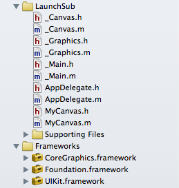

|
サンプルアプリ LaunchTest |
アプリ連携のデモです。
「LaunchTest」アプリを起動し、画面をタッチしますと、「LaunchSub」アプリの起動を試みます。
| 起動元アプリのプロジェクト作成 |
『プロジェクトの作成』の流れに沿ってプロジェクトを作成します。
・「（1）プロジェクトを新規作成する」の項の、「Product Name」の入力を「LaunchTest」にします。
・「（3）D2iPのファイルをプロジェクトに追加する」の項で追加するファイルは次のファイルです。
_Canvas.h
_Canvas.m
_Graphics.h
_Graphics.m
_Main.h
_Main.m
・以下のような構成になります。
・「AppDelegate.h」「AppDelegate.m」「MyCanvas.h」「MyCanvas.m」のデフォルトの内容を一旦消去してから、「samples\LaunchTest」フォルダの下の同名のファイルの内容をコピーしてください。
・カスタムURLスキームを設定します。
「TARGETS」の「LaunchTest」を選択して「Info」タブを開き、右下の「Add」から「Add URL Type」を実行します。
「Identifier」に「net.satis.LaunchTest」と入力
「URL Schemes」に「LaunchTest」と入力
| 起動先アプリのプロジェクト作成 |
『プロジェクトの作成』の流れに沿ってプロジェクトを作成します。
・「（1）プロジェクトを新規作成する」の項の、「Product Name」の入力を「LaunchSub」にします。
・「（3）D2iPのファイルをプロジェクトに追加する」の項で追加するファイルは次のファイルです。
_Canvas.h
_Canvas.m
_Graphics.h
_Graphics.m
_Main.h
_Main.m
・以下のような構成になります。

・「AppDelegate.h」「AppDelegate.m」「MyCanvas.h」「MyCanvas.m」のデフォルトの内容を一旦消去してから、「samples\LaunchSub」フォルダの下の同名のファイルの内容をコピーしてください。
・カスタムURLスキームを設定します。
「TARGETS」の「LaunchSub」を選択して「Info」タブを開き、右下の「Add」から「Add URL Type」を実行します。
「Identifier」に「net.satis.LaunchSub」と入力
「URL Schemes」に「LaunchSub」と入力